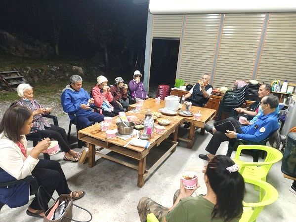
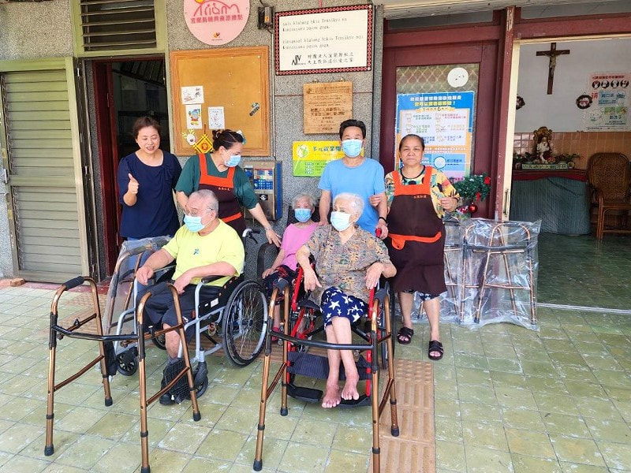
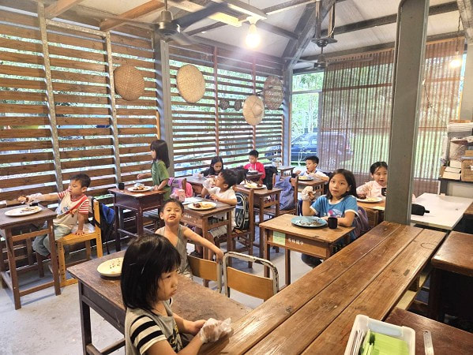

最新活動 2025
2025 年度專案
大順公益集團關懷獨居老人敬老餐會原住民樂舞演出
大澳灣文化工作團應大順公益集團熱情邀請，於獨居老人敬老愛心餐會中進行台灣原住民傳統樂舞演出。舞者以熱情洋溢的旋律與敬老共舞的互動，為長輩們帶來無限溫暖與歡笑。
掌握大澳灣文化工作團最新年度活動、公益專案推動進度與溫馨紀實。

最新活動 2025大澳灣文化工作團應大順公益集團熱情邀請，於獨居老人敬老愛心餐會中進行台灣原住民傳統樂舞演出。舞者以熱情洋溢的旋律與敬老共舞的互動，為長輩們帶來無限溫暖與歡笑。
 愛心物資
2025
愛心物資
2025
感謝一語堂食品熱心公益，捐贈優質營養食品與甜美點心。大澳灣團隊迅速將物資分類打包，即時專車運送至偏鄉弱勢家庭、獨居長者與課輔班孩童手中。
 文化培力
2024
文化培力
2024
持續推動『鼓舞心生活』音樂培力計畫，引導偏鄉部落學童與社區身心障礙朋友藉由手鼓律動抒發情感、建立自信，透過節奏找回生活與心靈的生命力。

愛心物資 2024結合民間善心企業所捐贈之日常主食與生活營養品，深入台東與花蓮山區偏遠部落，挨家挨戶探訪貧困家庭，送上即時的溫飽與關懷。

教育扶助 2024針對後山花蓮佳民部落弱勢家庭孩童放學後的照顧與學習斷層，團隊發起課業與生活輔導經費籌募計畫，提供課後點心、師資輔導與安全溫馨的成長環境。
 社服行腳
2023
社服行腳
2023
填寫完成後點擊「確認發布」，新訊息將立即出現在網站頂端！
在此可以檢視、刪除您自行新增的文章，或是匯出/匯入 JSON 備份檔。